Sige las instrucciones indicadas.
Rellena las soluciones dentro de este mismo proyecto de HTML en el formato solicitado. Las imagenes tienen que
ir dentro de la carpeta assets/img, cuando lo completes, crea un zip y entregalo en el aules.
Las preguntas se deben justificar convenientemente con las capturas. Este proyecto de VSCode nos servirá sólo para enviar las soluciones, NO se hace el seguimiento con git.
# 1
Crear una carpeta llamada
Ex_Git_tuNombre
No se debe abrir la carpeta en VSCode, se trabaja directamente desde la consola de git.
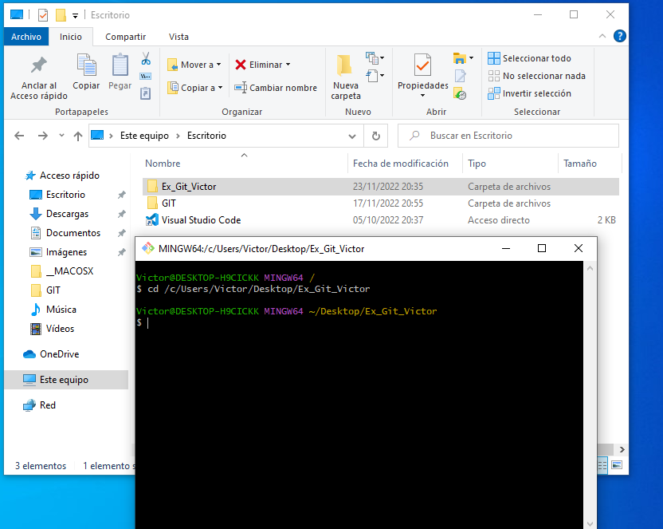
# 2
Dentro de esa carpeta, inicializa el proyecto de la carpeta Examen de git. "Ex_Git_tuNombre"
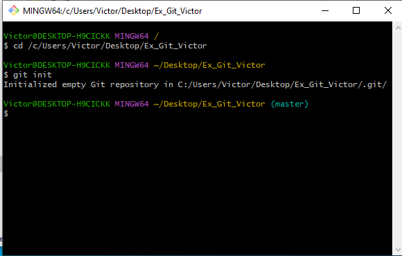
# 3
Dentro del repositorio crea un archivo llamado README.md, ingresa el siguiente contenido:
# Información
Examen de GIT, tu nombre y apellidos.
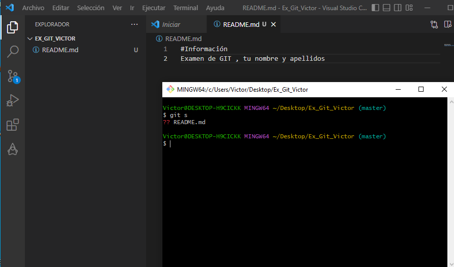
# 4
Agrega el README.md al stage o escenario
Modifica README.md añadiendo el texto "Espero finalizar el examen de git"
Utiliza el comando de git para ver la diferencias del fichero README y añade todas las capturas que lo demuestren
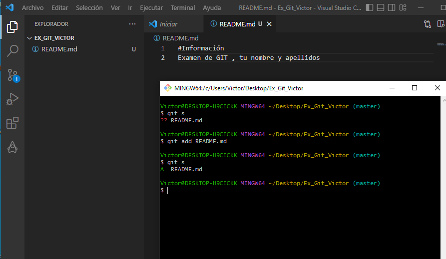
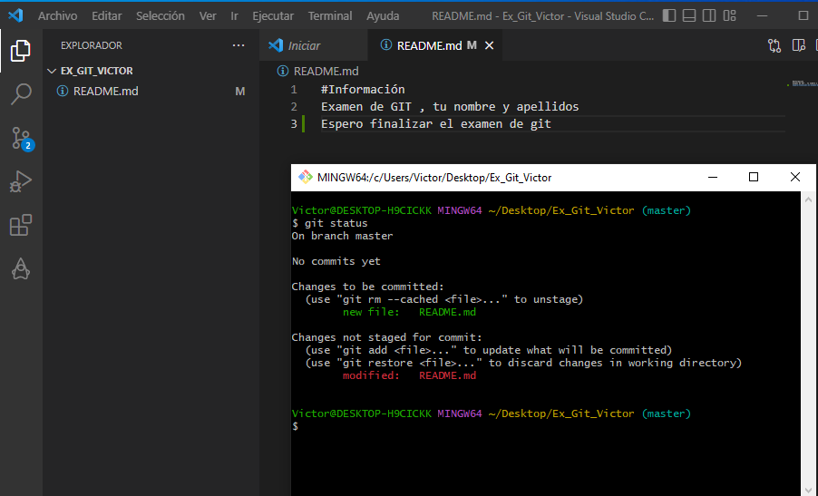
# 5
Agrega el README.md al stage o escenario
Realiza el primer commit con el mensaje Creación del readme
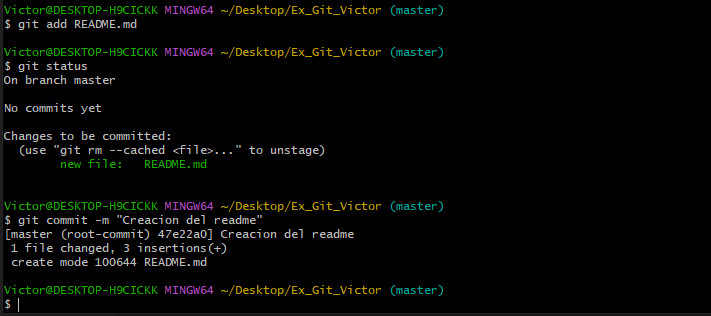
# 6
Crea una carpeta dentro del proyecto llamada LOGS
Dentro de la carpeta logs, crea un archivo llamado diaDelExamen.log
Crear otro archivo llamado entornos.log
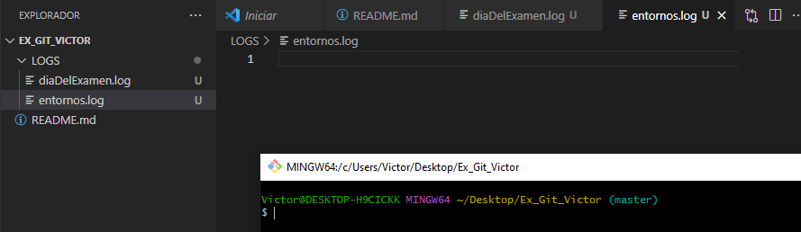
# 7
Agrega únicamente el archivo diaDelExamen.log al stage
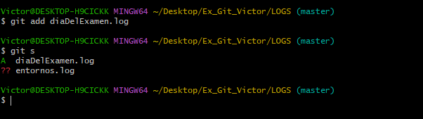
# 8
Realiza el segundo commit con el archivo diaDelExamen.log, y en el mensaje coloca "Creamos el archivo diaDelExamen.log el dia del examen, hoy 23 de noviembre"
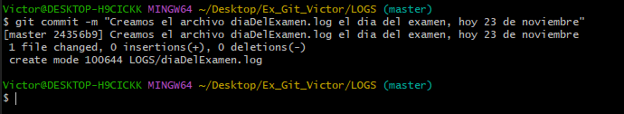
# 9
Vamos a crear ahora el archivo .gitignore
Ignoremos completamente el archivo entornos.log
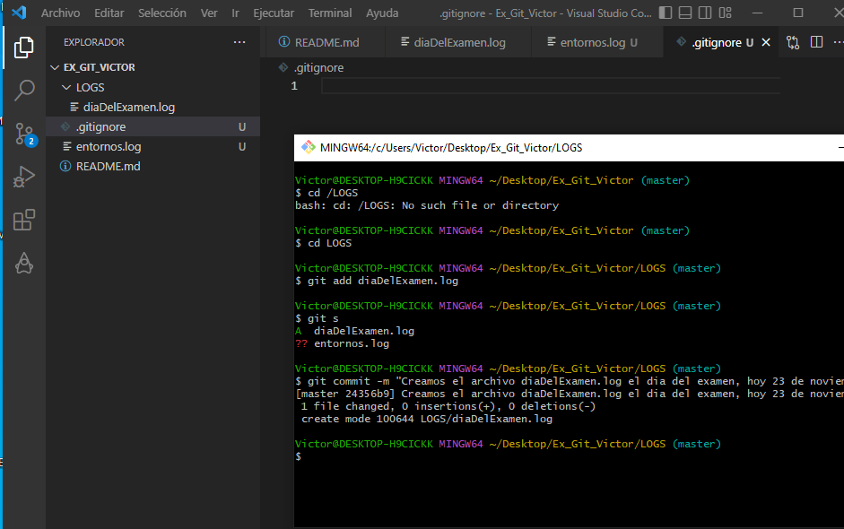
# 10
Agrega al stage el archivo .gitignore
Realiza un commit unicamente con el archivo .gitignore
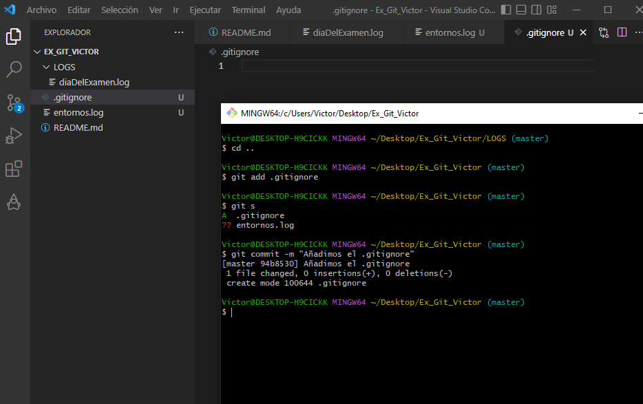
# 11
Borra la carpeta LOGS
Borra el archivo .gitignore
El único archivo que debe de quedar, es el README.md
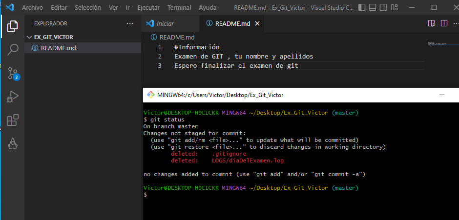
# 12
Reconstruir todo lo borrado con un único comando. (El archivo entornos.log debe de aparecer)
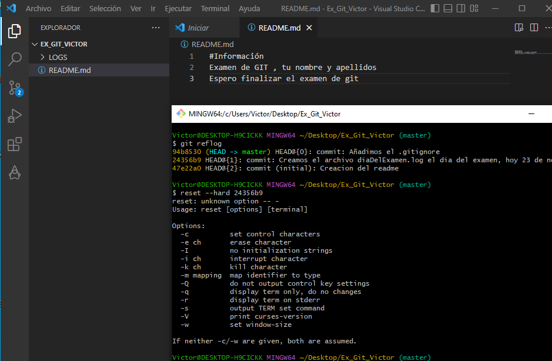
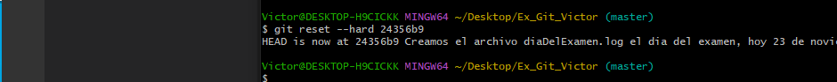
# 13
¿Por qué el archivo entornos.log no apareció?
Debes de ser capaz de analizar el por qué
Contesta a la pregunta en formato texto
# 14
Vuelve al commit que hiciste para actualizar el .gitignore usando el reflog
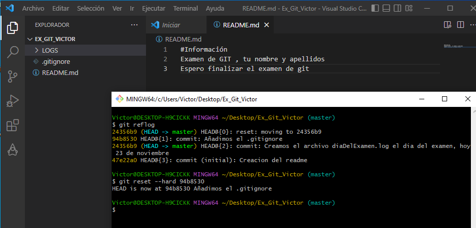
# 15
Añade un fichero "DAM.commit" a tu proyecto, guarda en el el resultado
de ejecutar un git status
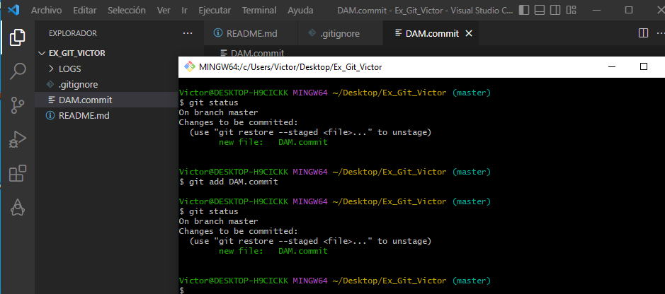
# 16
Añade un alias a tu fichero de configuración de git